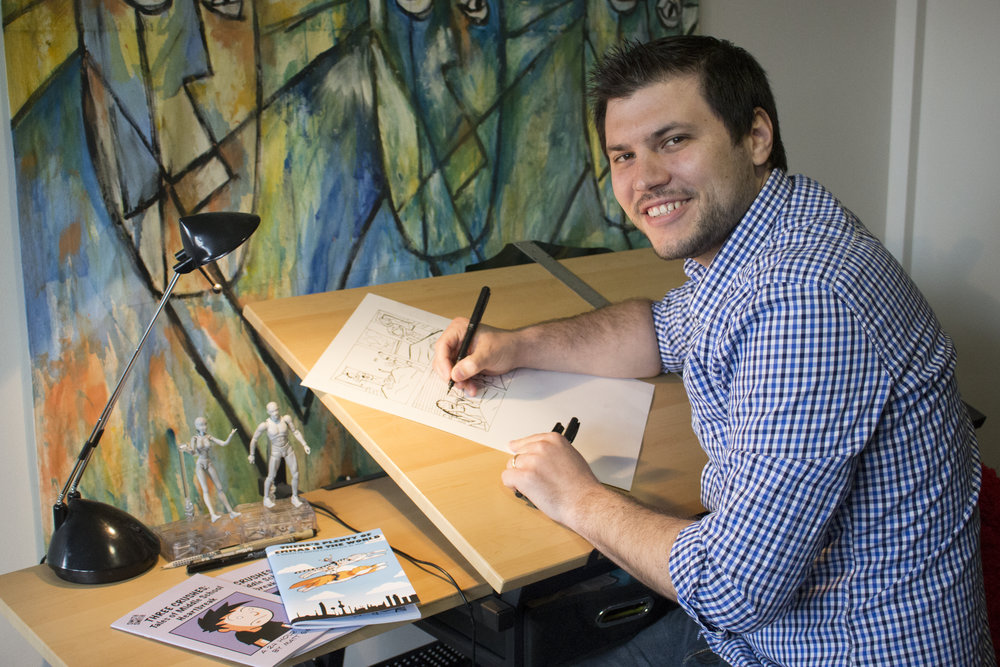

People from chiba that has an orchid store came to our school and gave us a pot of orchids as a gift from them that we were going to give to our someone special.First we put our own name onto the pot of the orchid,then we gave our orchid a name,then we went back up to the classroom to learn how to water it and make it grow the way it should.Everyday it seemed like the stems were getting taller,quite soon it seemed that everyday the buds were getting biiger. It wasn't long after that that flowers started blooming out of the buds. After our orchids had fully grown we met with the people that gave us the orchids again to get it ready to give to our someone special.We put ribbons, a card, and a box to carry!! It was a beautiful sight and that is something that I will always remember in third grade.

We learned about how to make an accordian book (a book that doesn't have a spine) bye Mr.Matsuda, a man who lives in Kyoto and is the person who makes the books. These books are made with old and ancient kimono fabric so this book is very precious. We learned a little bit more of their story and after we started making this very precious book.This was so much fun!!!!!!I would like to thank Mrs.Clark again for organizing this event.This was sooooooo fun to make and I will use it to make my best memories always live.
We met with Zetta Elliot online!!!!Zetta Elliot is a New York times best-selling author and her books are amazingly good.The way she describes everything is so pristine and she always makes sure that her character got through the hard time in their life. She is a very inspiring author and she is amazing and cool. In the book talk she first read Chapter 4 of her book Dragons in a bag then she answered the questions that we had. Having that book talk with her was so fun!!!!!!!
We met Matt Smith online for a lesson on drawing comics!!!He told us all about his books and what we needed to make a good comic.He mainly taught us about drawing and how he makes his books.When he was talking about drawing we learned about hpw to show emotion in our drawings and why and how it was important to make the outline different.We learned that when Matt Smith came up with an idea he would write the story on post-its and then stick it on walls and move them around until the order made sense.After that he wrote only the script and made the panels. Then he drew the characters and went to the printers office to get it printed. I learned so much from learning with Matt Smith and it was so fun!!!
